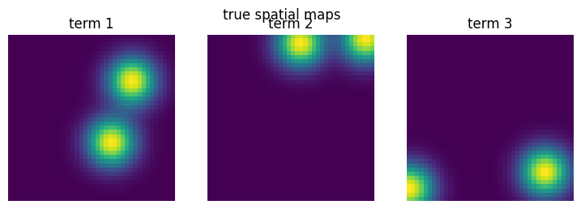
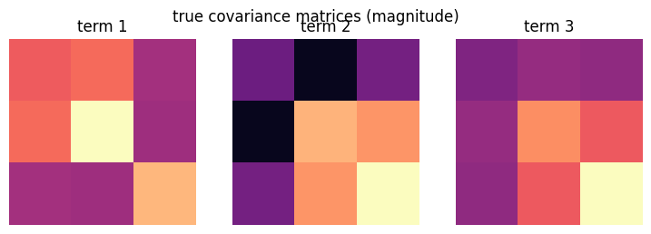
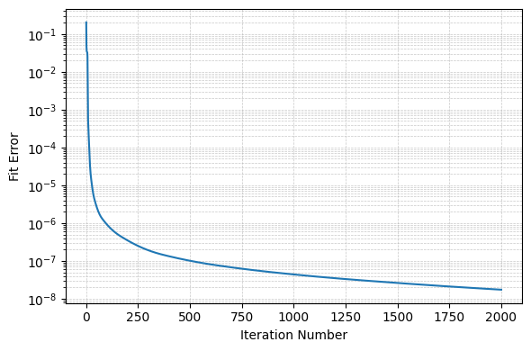
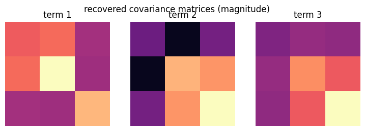

Cov-LL1: covariance images#
Some imaging systems measure, at each pixel, how several signals vary together: a covariance matrix of size K × K. The Cov-LL1 model writes such an image as a sum of terms non-negative spatial map × covariance matrix (see Cov-LL1). Each pixel’s matrix is stored as a vector of K² numbers, so the data form a tensor of shape (rows, columns, K²).
The data#
40 × 40 pixels with 3 × 3 covariance matrices (K² = 9 numbers per pixel). There are R = 3 terms; each spatial map is a sum of L1 = 2 blobs, and each term’s covariance matrix has rank L2 = 2.
import matplotlib.pyplot as plt
import numpy as np
from pybbtd import CovLL1
from pybbtd.btd import factors_to_tensor, spatial_maps
from pybbtd.covll1 import (
generate_covll1_factors,
is_valid_covariance,
validate_covariance_tensor,
)
from pybbtd.datasets import make_blob_factors
from pybbtd.visualization import plot_error
np.random.seed(0)
n_rows, n_cols, K = 40, 40, 3
R, L1, L2 = 3, 2, 2
model = CovLL1((n_rows, n_cols, K**2), R=R, L1=L1, L2=L2)
A0, B0 = make_blob_factors(n_rows, n_cols, R, L1, seed=0)
_, _, C0 = generate_covll1_factors(
model.dims, R, L1, L2
) # one vectorized covariance per term
T = factors_to_tensor(A0, B0, C0, model.get_constraint_matrix())
T.shape
(40, 40, 9)
Every pixel holds a valid covariance matrix (Hermitian and positive semidefinite):
validate_covariance_tensor(T)
True
def show_maps(maps, title):
"""Plot one image per term, scaled so its strongest pixel is +1."""
fig, axes = plt.subplots(1, len(maps), figsize=(3 * len(maps), 2.8))
for r, (ax, m) in enumerate(zip(axes, maps, strict=True)):
ax.imshow(m / m.flat[np.abs(m).argmax()], cmap="viridis")
ax.set_title(f"term {r + 1}")
ax.axis("off")
fig.suptitle(title)
plt.show()
def show_covariances(C, title):
"""Plot the magnitude of each term's covariance matrix."""
fig, axes = plt.subplots(1, C.shape[1], figsize=(3 * C.shape[1], 2.8))
for r, ax in enumerate(axes):
Sigma = C[:, r].reshape(K, K)
ax.imshow(np.abs(Sigma) / np.abs(Sigma).max(), cmap="magma", vmin=0, vmax=1)
ax.set_title(f"term {r + 1}")
ax.axis("off")
fig.suptitle(title)
plt.show()
show_maps(spatial_maps(A0, B0, L1), "true spatial maps")
show_covariances(C0, "true covariance matrices (magnitude)")


Fit the model#
The AO-ADMM solver keeps the spatial maps non-negative and every covariance matrix positive semidefinite. A K-means initialization groups pixels with similar covariance matrices to get a starting point.
model.fit(T, init="kmeans", max_iter=2000, max_admm=50, rel_tol=1e-10, abs_tol=0)
plot_error(model.fit_error)
RuntimeWarning: Reached max_iter=2000 before converging. Check the fit error.
model.fit(T, init="kmeans", max_iter=2000, max_admm=50, rel_tol=1e-10, abs_tol=0)

The solver stops at max_iter and warns, as the error is still slowly decreasing. The
estimate is already accurate, as the checks below show; a larger max_iter would refine
it further.
Check the result#
The recovered maps and covariance matrices match the true ones, up to the order of the terms and a scaling shared between each map and its matrix:
A, B, C = model.factors
show_maps(spatial_maps(A, B, L1), "recovered spatial maps")
show_covariances(C, "recovered covariance matrices (magnitude)")

The constraints hold and the relative error is small:
print("A, B non-negative:", A.min() >= 0, B.min() >= 0)
print(
"valid covariances:", [is_valid_covariance(c.reshape(K, K), tol=1e-8) for c in C.T]
)
print("relative error:", np.linalg.norm(model.tensor - T) / np.linalg.norm(T))
A, B non-negative: True True
valid covariances: [True, True, True]
relative error: 0.0001316421358196799
Cov-LL1 does not constrain the rank L2 of the covariance matrices; the fourth-order BBTD model does.